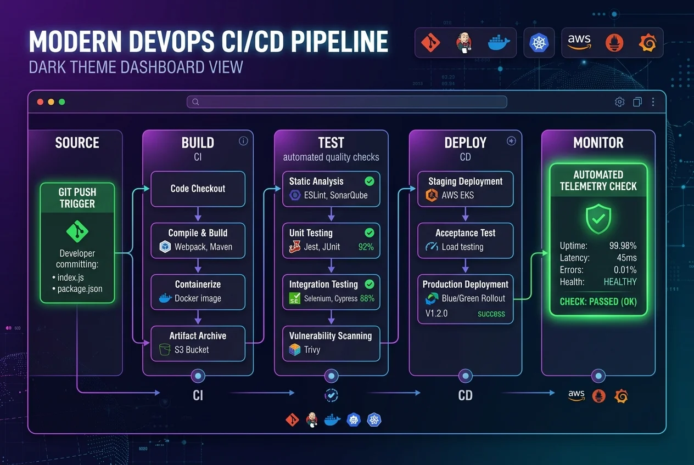
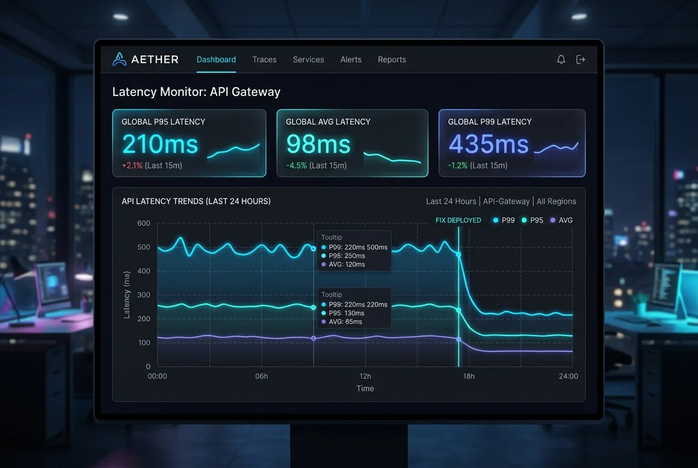

Blog
Fresh insights for your stack
Cloud monitoring, DevOps, cloud security, and performance optimization — from our engineers.

Multi-cloud monitoring without the chaos
Collecting the right signals from AWS, Azure, and GCP without burning your metric budget.
Read article →
CI/CD pipelines you can actually trust
Gate deploys on real telemetry, not vibes — and catch regressions before they ship.
Read article →The zero-trust monitoring checklist
Hardening access, encrypting telemetry, and staying SOC 2 audit-ready with Stackly.
Read article →
Tuning P95 latency in 30 days
A practical playbook to find your slowest path and cut response times by half.
Read article →